Vector product or Cross product
In ℝ3 the versors i, j, k form a orthonormal basis
i x i = 0 j x j = 0 k x k
i x j = k j x k = i k x i = j
Definition 1.10.1. Let the two vectors in ℝ3, a = a1i + a2j + a3k and b = b1i + b2j + b3k, we can find a third space vector c, called the cross product of a and b, and denoted by c = a x b, defined algebrically as
a x b = (a1i + a2j + a3k) x (b1i + b2j + b3k)
= a1b1 i x i + a1b2 i x j + a1b3 i x k
+ a2b1 j x i + a2b2 k x j + a2b3 j x k
+ a3b1 k x i + a3b2 k x j + a3b3 k x k
= (a2b3 − a3b2)i + (a3b1 − a1b3)j + (a1b2 − a2b1)k □
then
A x B =
(A x B)z = AxBy − AyBx
(A x B)x = AyBz − AzBy
(A x B)y = AzBx − AxBz
The formula that defines the cross product can can be put in a more compact for with aid of determinants.
Using cofactor expansion along the first row instead, it expands to
Proposition 1.10.2 (Lagrange’s Identity). For all vectors a,b ∈ ℝ3 holds the identity
|a × b|2 = |a|2 |b|2 − (a ⋅ b)2
Proof. We use the algebraic of dot and cross product to expand both sides of the identity and show both sides expand to the same complicated expression. By definition of length of a vector
|a|2 = a12 + a22 + a32
|b|2 = b12 + b22 + b32
(a ⋅ b)2 = (a1b1 + a2b2 + a3b3)2
|a × b|2 = (a2b3 − a3b2)2 + (a3b1 − a1b3)2 + (a1b2 − a2b1)2
by doing the algebra the identity is verified. □
Theorem 1.10.4 (cross product geometry). Let a and b be two vectors in ℝ3:
the vector a x b is ortogonal to both a and b;
The direction of a x b is the right-hand rule: if a is in the direction of your thumb, and b is in the direction of your straight index finger, then a x b is the direction of your bent second/longest finger.
(Geometric interpreation of cross product): |a x b| = |a| |b| sin θ, where θ is the angle between vectors a and b which represents the area of the parallelogram with edges a and b.
Proof.
Let a = (a1, a2, a3) and b = (b1, b2, b3). Recall that two vectors are orthogonal if their dot product is zero. To determine orthogonality between v and the cross product a × b, consider
a ⋅ (a x b) = (a1i + a2j + a3k) ⋅ [i(a2b3 −a3b2) + j (a3b1 − a1b3) + k (a1b2 −a2b1)]
= a1 (a2b3 −a3b2) + a2(a3b1 −a1b3) + a3(a1b2 − a2b1)
= a1a2a3 − a1a3b2 + a2a3b1 − a1a2b3 − a2a3b1 = 0Since the dot product is zero, the cross product a x b is orthogonal to vector a.
This right-handed property follows from the convention that the standard unit vectors i,j,k are right-handed; We prove only for the case of vectors in the xy-plane in which case a = (a1, a2, 0) and b = (b1, b2, 0), and when both a1, b1 > 0. The cross productr is a x b = k (a1b2 − a2b1). Consequently, this cross product is the the +k direction only when a1b2 − a2b1 > 0 (and in the −k direction when a1b2 − a2b1 < 0)
We start with Lagrange’s Identity and substitute a ⋅ b = |a| |b| cos θ
|a × b|2 = |a|2 |b|2 − (a ⋅ b)2
= |a|2 |b|2 − |a|2 |b|2 cos2 θ
= |a|2 |b|2 (1 − cos2 θ) = |a|2 |b|2 sin θTaking the square roots gives |a × b| = |a| |b| sin θ. □

Verctor Algebra
A x A = 0
A ⋅ (A x B) = 0
A ⋅ (B x C) = (A x B) ⋅ C